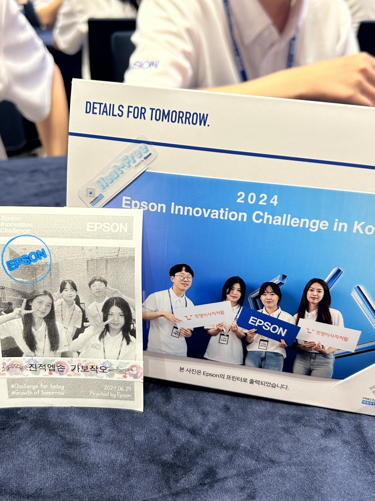
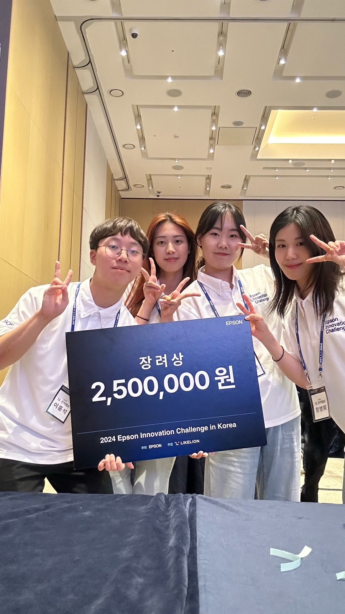
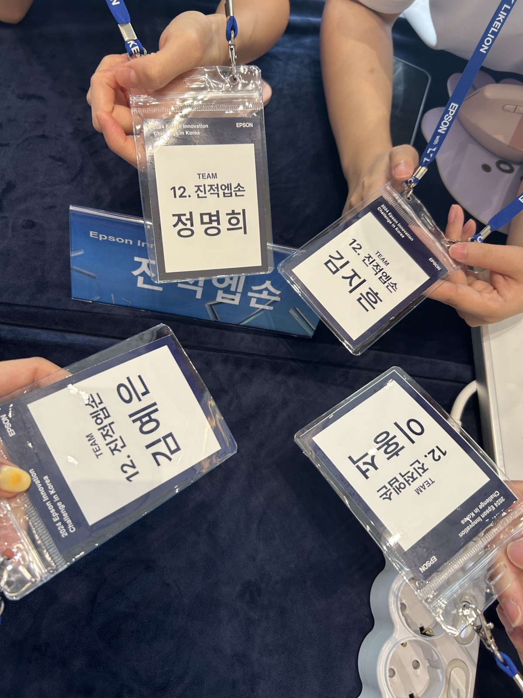
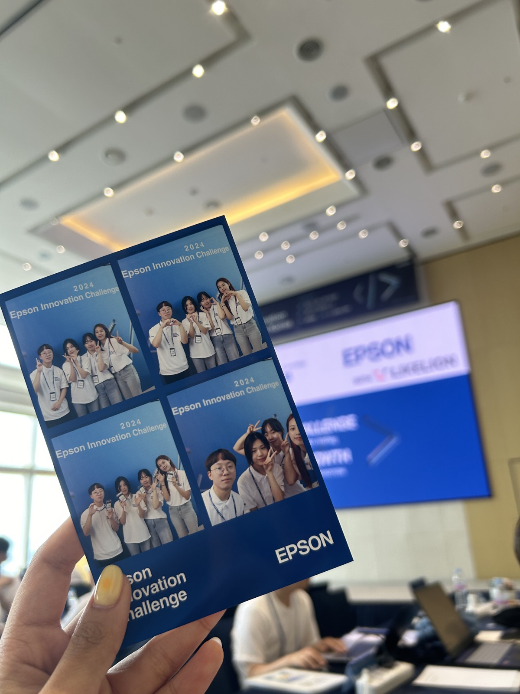
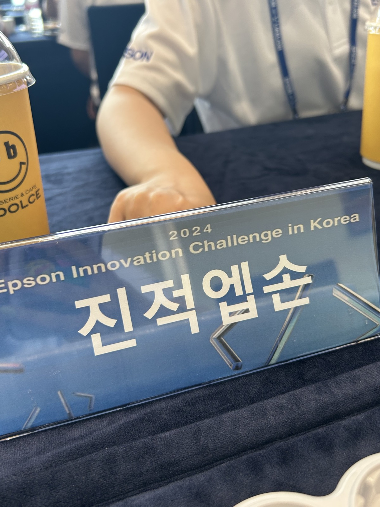
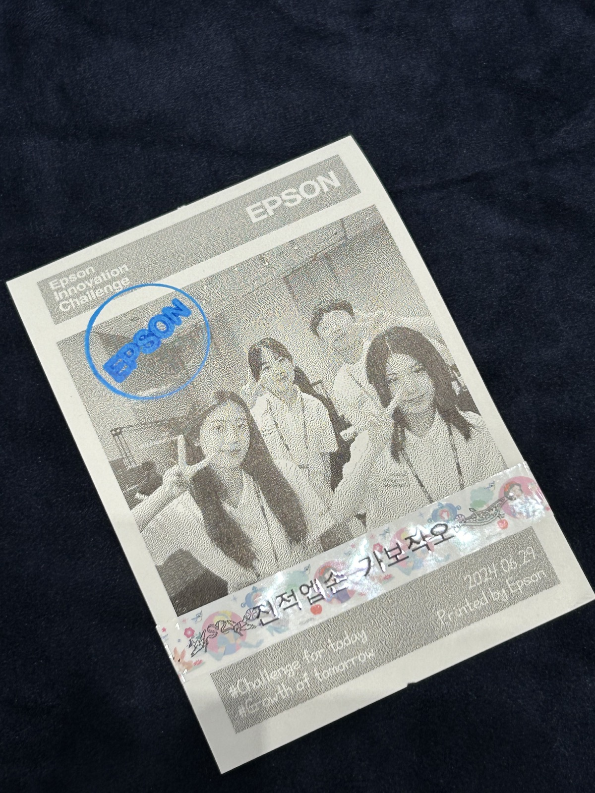
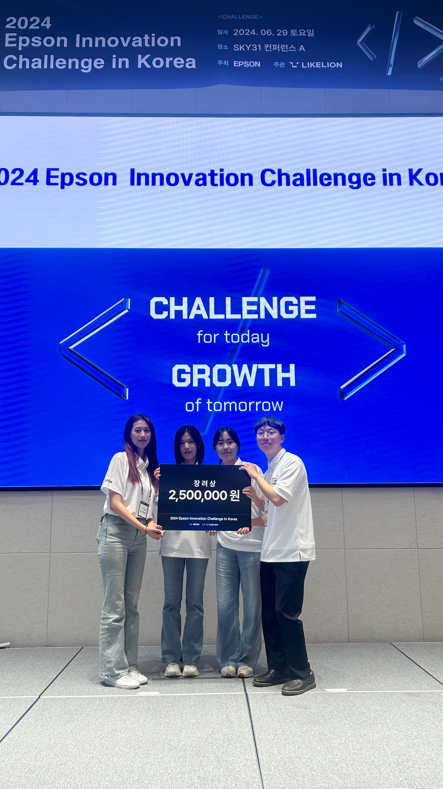

EPSON 프린터기와 AI를 결합한 단어 카드 서비스. 사용자 입력에 따라 다양한 어휘를 노출해주는 카드를 생성하고 출력합니다.
EPSON Connect API를 활용한 비즈니스 솔루션 개발 공모전을 계기로 유아기 아동 언어 학습용 단어 카드 시장을 조사했습니다. 자체 설문 결과 응답자의 71.1%가 유아기 언어 학습에 단어 카드를 사용해본 경험이 있었지만, 기존 카드는 창의력 부족과 빠른 흥미 소진이라는 약점을 가지고 있었습니다.
리드어롱, 듀오링고, 한글공부 등 기존 서비스를 비교한 결과, 맞춤형 언어학습·유아 맞춤형 서비스·프린트 옵션·이미지 제공을 모두 갖춘 서비스가 없다는 점을 확인했습니다. 부모들은 더 많은 단어 카드가 아니라, 아이가 흥미를 느끼는 순간에 맞춘 카드를 원했습니다.
원하는 테마를 입력하면 AI가 해당 테마에 맞는 단어와 카드 이미지를 생성합니다.
다양한 템플릿으로 생성한 카드를 EPSON Connect API로 바로 출력할 수 있습니다.
학습한 단어 기록을 날짜별로 모아 아이의 성장 일지로 보관합니다.
목적에 맞는 결과를 얻기 위해 AI에게 어디까지 맡기고 어디서 통제할지가 핵심 과제였습니다. 사용자 입력 → 동사의 다양성 확보 → 예문에 맞는 이미지 생성 → 모델에 적합한 프롬프트 작성까지 단계적으로 프롬프트를 발전시켰습니다.
여러 시행착오를 통해 (1) 사용자 입력 정제, (2) 이미지 생성 시 부적절한 요소 차단, (3) 유아 친화적 난이도 설정이라는 세 가지 원칙을 적용했습니다.
주요 타깃은 다양한 언어교육에 관심을 가진 국내 영유아 학부모입니다. 맘카페 서포터즈를 통한 오프라인 홍보와, 충성 고객을 대상으로 한 맞춤형 마케팅을 통해 초기 사용자를 확보하고자 했습니다.
비즈니스 모델은 광고 제거 구독 플랜, 프리미엄 구독 플랜, 기본 템플릿 이외의 추가 구매 수익으로 구성했으며, 유아기 아동 부모 타깃 기업과의 광고 협업, 캐릭터 IP 기업과의 콜라보를 통한 추가 수익도 함께 설계했습니다.






